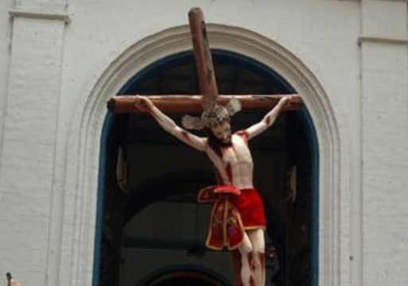
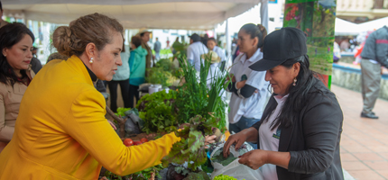

Las fiestas en honor al Señor de la Caridad
Historia, tradición y cultura de la parroquia Malacatos
Capítulo 1: Origen y datos históricos
Las festividades del Señor de la Caridad en Malacatos tienen raíces profundas en la tradición religiosa de la provincia de Loja. Según se cuenta, la devoción hacia esta imagen comenzó hace varios siglos, cuando se introdujeron en la región las primeras representaciones religiosas traídas por misioneros españoles.
La imagen actual del Señor de la Caridad se venera desde el siglo XIX y es considerada milagrosa por la comunidad local. La fe popular creció a partir de relatos de favores concedidos, fortaleciendo una tradición que actualmente representa la identidad cultural y religiosa del valle de Malacatos.
Antiguamente las celebraciones eran más sencillas, limitadas a misas y rezos comunitarios. Con el paso del tiempo se incorporaron procesiones, novenas, juegos populares y ferias, convirtiéndose en uno de los principales eventos religiosos del cantón Loja.

Capítulo 2: Qué se celebra
Las fiestas del Señor de la Caridad representan un homenaje religioso de agradecimiento y fe hacia la imagen venerada en Malacatos. Es una época donde la comunidad fortalece sus valores espirituales y mantiene vivas sus tradiciones.
Durante el mes de agosto se desarrollan actividades religiosas, culturales y sociales. La fecha principal reúne a familias, visitantes y habitantes de diferentes lugares que participan en procesiones, ferias, actividades comunitarias y celebraciones populares.
La procesión del Señor de la Caridad constituye el momento más importante, donde la imagen recorre las calles acompañada por música, oraciones y la participación de los fieles.

Capítulo 3: Costumbres y tradiciones durante las fiestas
Las festividades combinan actos religiosos con celebraciones populares. Durante agosto se realizan novenas, misas y actividades organizadas por barrios y familias de la comunidad.
Los mayordomos cumplen un papel importante preparando actividades religiosas, ofrendas y colaborando con la organización de la celebración.
También se desarrollan ferias gastronómicas, eventos musicales, danzas tradicionales y actividades culturales donde destacan platos típicos como tamales, humitas, cecina, cuy asado y miel con quesillo.

Capítulo 4: Aspectos religiosos y sociales
Uno de los principales valores de estas festividades es la unión de la comunidad. Durante agosto las familias participan en las novenas, decoraciones de la iglesia y actividades religiosas.
La tradición de los mayordomos fortalece valores como la solidaridad y la cooperación, ya que muchas personas ofrecen apoyo y atención a los visitantes.
Además, estas fiestas representan un espacio de reencuentro para quienes han migrado y regresan a Malacatos para celebrar sus raíces y compartir con familiares y amigos.